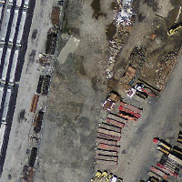

名前
ST_Transform — ラスタを既知の空間参照系から他の既知の空間参照系に、指定したリサンプリングアルゴリズムで投影変換します。選択肢は、最近傍補間('NearestNeighbor')、双線形補間('Bilinear')、3次補完('Cubic')、3次スプライン補完('CubicSpline')、ランツォシュ補完('Lanczos')、があります。デフォルトは最近傍補完です。
概要
raster ST_Transform(raster rast, integer srid, double precision scalex, double precision scaley, text algorithm=NearestNeighbor, double precision maxerr=0.125);
raster ST_Transform(raster rast, integer srid, text algorithm=NearestNeighbor, double precision maxerr=0.125, double precision scalex, double precision scaley);
説明
ラスタを既知の空間参照系から他の既知の空間参照系に、指定したリサンプリングアルゴリズムで投影変換します。algorithmが指定されていない場合には'NearestNeighbor'とし、maxerrorが指定されていない場合には0.125とします。
アルゴリズムの選択肢は、最近傍補間('NearestNeighbor')、双線形補間('Bilinear')、3次補完('Cubic')、3次スプライン補完('CubicSpline')、ランツォシュ補完('Lanczos')です。詳細についてはGDAL Warp resampling methodsを参照して下さい。
初出: 2.0.0 GDAL 1.6.1以上が必要です。
![[注記]](images/note.png) | |
変換機能が思ったように働かない場合には、環境変数PROJSOをPostGISが使用する投影変換ライブラリの.soまたは.dllに指定する必要があるかも知れません。ファイル名の指定だけ必要です。Windowsでの例として、コントロールパネル→システム→システムの詳細設定→環境変数で、 |
例
SELECT ST_Width(mass_stm) As w_before, ST_Width(wgs_84) As w_after,
ST_Height(mass_stm) As h_before, ST_Height(wgs_84) As h_after
FROM
( SELECT rast As mass_stm, ST_Transform(rast,4326) As wgs_84
, ST_Transform(rast,4326, 'Bilinear') AS wgs_84_bilin
FROM aerials.o_2_boston
WHERE ST_Intersects(rast,
ST_Transform(ST_MakeEnvelope(-71.128, 42.2392,-71.1277, 42.2397, 4326),26986) )
LIMIT 1) As foo;
w_before | w_after | h_before | h_after
----------+---------+----------+---------
200 | 228 | 200 | 170
 元のラスタはメートル単位のマサチューセッツ州平面(mass_stm) | WGS84経度緯度に変換した後(wgs_84) | 最近傍補完の代わりに双線形補間を使ってWGS84経度緯度に変換した後(wgs_84_bilin) |